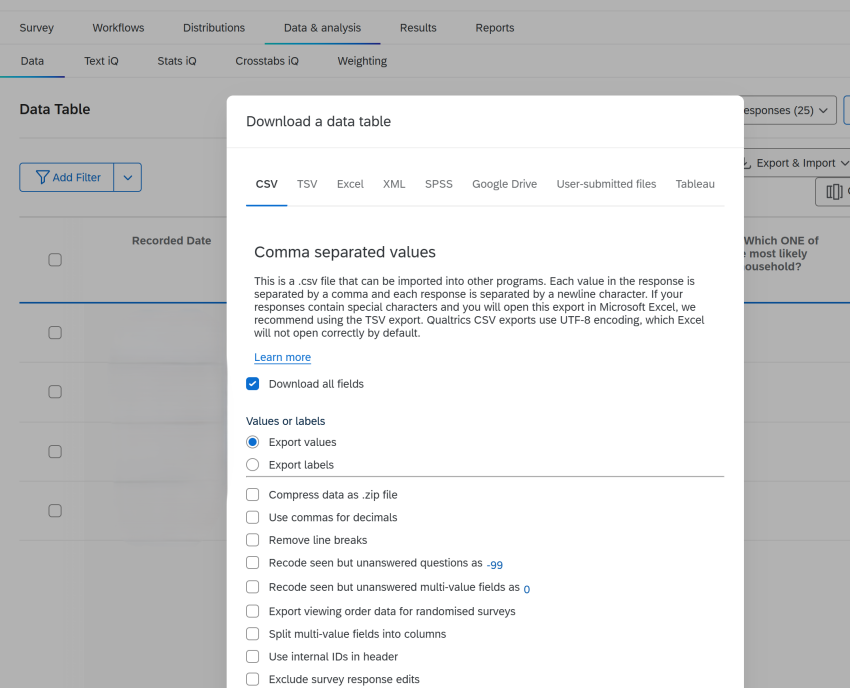
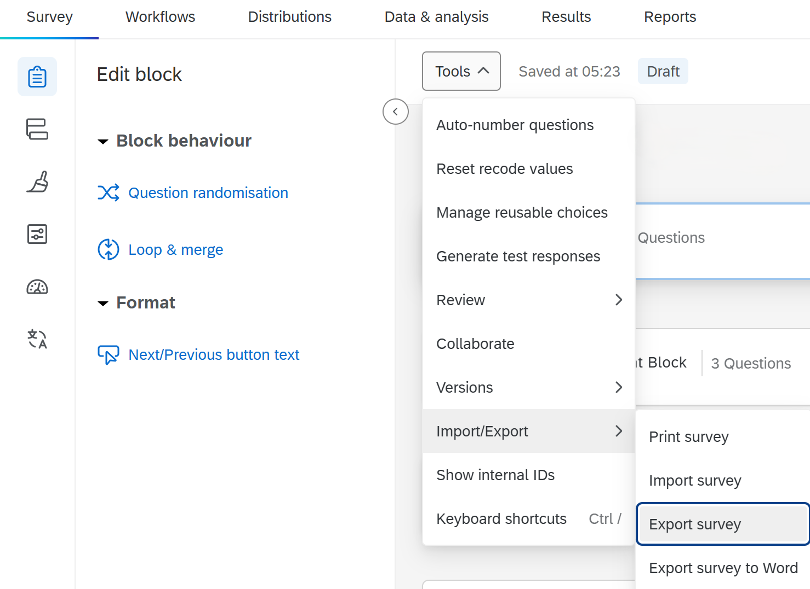
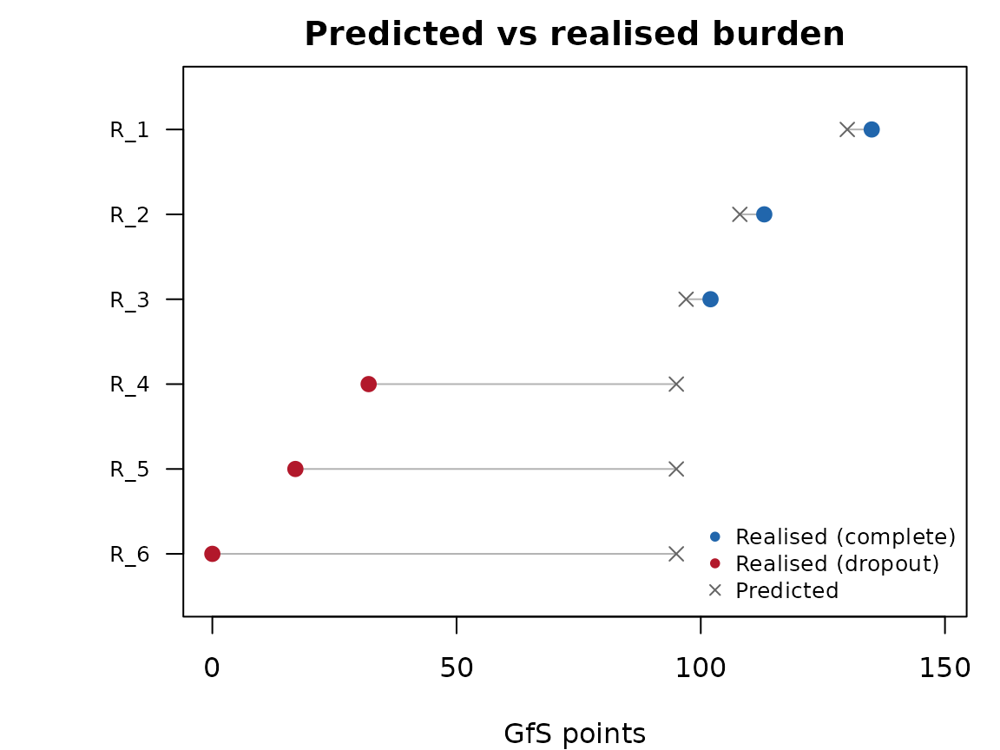
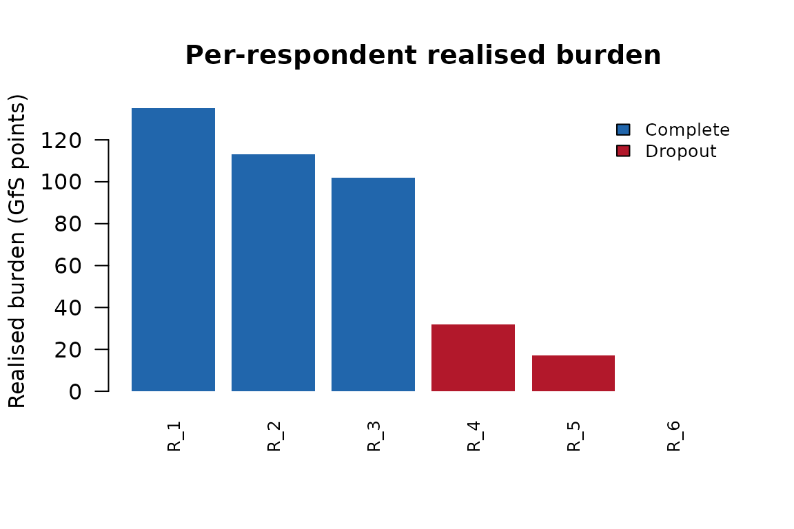

What this answers. How much burden each respondent’s answers represent, after fielding, and how that compares with the structural prediction.
What you need. The .qsf of the survey
version that collected the data, and the response data (API or CSV
export).
What it cannot establish. Realised burden is answer-based: it does not measure exposure, reading time or partial completion, and a predicted-minus-realised gap does not by itself identify dropout.
The function respondent_burden() can estimate burden
ex ante from the survey alone. Once responses are
collected, however, you can also compute the realised
burden: an answer-based GfS+ estimate for each respondent.
Its operational definition matters for interpretation. A question counts as answered when at least one of its mapped response columns is non-blank, and then its full GfS+ score is added, separately for each detected Loop & Merge iteration. So:
- a partly answered matrix scores in full;
- a question shown but left blank scores 0, so realised burden does not measure exposure;
- it does not measure reading time, or how much of a question was completed;
-
n_questions_answeredcounts question-iteration pairs, not distinct questions.
realised_burden() takes the same QSF and the response
data and returns one row per respondent with both the realised score and
the structural prediction for comparison.
When to use each function
| Function | Input | Output | Timing |
|---|---|---|---|
respondent_burden() |
QSF only | Predicted burden by path | ex ante |
realised_burden() |
QSF + response data | Per-respondent answer-based burden | ex post |
Use respondent_burden() to evaluate a draft survey
before fielding. Use realised_burden() after fielding to
see how answer-based burden was distributed across respondents.
Getting the data
realised_burden() needs two inputs: the QSF (survey
definition) and a data frame of responses. Both can come from the
Qualtrics API.
Via the API (recommended)
library(surveyBurden)
# 1. Fetch the QSF (survey structure)
qsf <- fetch_qsf("SV_xxxxxxxxxx")
# 2. Fetch responses via qualtRics
responses <- qualtRics::fetch_survey(
surveyID = "SV_xxxxxxxxxx",
label = FALSE, # numeric recode values, not choice text
convert = FALSE, # keep raw strings
force_request = TRUE # bypass qualtRics cache
)
# 3. Compute realised burden
rb <- realised_burden(qsf, responses)
rbThe label = FALSE and convert = FALSE
arguments are important: they ensure column values are the raw numeric
recodes Qualtrics stores rather than labelled factor levels, which lets
the function detect non-blank answers reliably.
Both fetch_qsf() and
qualtRics::fetch_survey() need a Qualtrics API token. Find
yours in Qualtrics under Profile > Account Settings >
Qualtrics IDs (the API token row). See ?fetch_qsf
and vignette("qualtRics") from the qualtRics package for
setup.
Via CSV export
You need two files: the response data (CSV) and the survey definition (QSF).
Export response data. In Qualtrics, go to the Data & analysis tab, then click Export & Import > Export Data. Select CSV, tick Export values (not labels), and click Download.

Export the QSF. In the Survey tab,
open Tools > Import/Export > Export survey. This
downloads the .qsf file that realised_burden()
needs alongside the response data.

Then in R:
qsf <- read_qsf("my_survey.qsf")
responses <- read.csv("my_responses.csv", check.names = FALSE)
rb <- realised_burden(qsf, responses)
#> Removed 2 Qualtrics header rows (question labels / ImportId) from the top
#> of `responses`.
nrow(rb) # should equal your number of respondentsA raw Qualtrics CSV export has two extra rows under the column names:
the question labels and the {"ImportId": ...} row.
realised_burden() removes these when it can recognise them
– an ImportId cell, or a system column holding its own label
(ResponseId = “Response ID”) – and says so. It only looks
at the top rows and never guesses, so if you have edited the export
(renamed or dropped those columns), remove the header rows yourself
before scoring, and check that nrow(rb) matches your
respondent count.
Use the QSF exported from the survey version that collected the data: a later edit to the survey can change question ids and scoring.
Understanding the output
# Use the demo QSF shipped with the package
qsf_path <- system.file("extdata", "demo_travel_survey.qsf",
package = "surveyBurden")
qsf <- read_qsf(qsf_path)
cat <- parse_qsf(qsf)
# Simulate 6 respondents with different answer profiles
set.seed(42)
non_loop <- cat$question_id[!cat$in_loop]
loop_q <- cat$question_id[cat$in_loop]
resp <- data.frame(
ResponseId = paste0("R_", 1:6),
Finished = c(1, 1, 1, 0, 0, 0),
stringsAsFactors = FALSE
)
for (i in seq_along(non_loop)) {
qid <- non_loop[i]
resp[[qid]] <- ifelse(
c(TRUE, TRUE, TRUE, i <= 10, i <= 5, FALSE), "1", NA
)
}
for (qid in loop_q) {
resp[[paste0("1_", qid)]] <- c("1", "1", NA, NA, NA, NA)
resp[[paste0("2_", qid)]] <- c("1", NA, NA, NA, NA, NA)
resp[[paste0("3_", qid)]] <- c("1", NA, NA, NA, NA, NA)
}
rb <- realised_burden(qsf, resp)
rb[, c("response_id", "finished", "n_questions_answered",
"realised_points", "predicted_points")]
#> # A tibble: 6 × 5
#> response_id finished n_questions_answered realised_points predicted_points
#> <chr> <lgl> <int> <dbl> <dbl>
#> 1 R_1 TRUE 38 135 130
#> 2 R_2 TRUE 26 113 108
#> 3 R_3 TRUE 20 102 97
#> 4 R_4 FALSE 10 32 95
#> 5 R_5 FALSE 5 17 95
#> 6 R_6 FALSE 0 0 95Each row gives:
-
response_id– respondent identifier (auto-detected fromResponseIdor user-specified). -
finished– did the respondent complete the survey? -
furthest_block– ordinal of the last survey block in which the respondent answered at least one question. -
n_questions_answered– count of distinct questions with at least one non-blank response. -
realised_points/realised_minutes– the actual GfS+ burden from questions the respondent answered. -
predicted_points/predicted_minutes– the structural path prediction for comparison (fromrespondent_burden()logic). -
n_unmapped_cols– how many response columns could not be mapped to a QSF question (metadata columns likeStartDateare excluded before counting).
Column name mapping
The function maps response column names to QSF question IDs using three strategies, tried in order:
-
User-supplied
col_map– setattr(responses, "col_map")to a named list mapping column names to QIDs. An entry here overrides the automatic strategies for that column. -
Direct QID names – column is named
QID15,QID15_1, or1_QID15(loop iteration prefix). This is whatqualtRics::fetch_survey()produces by default. -
Export tags – column name matches a
DataExportTagfrom the QSF (e.g.Q15,TravelMode). Matching is case-insensitive, so lowercase columns from preprocessed exports also work.
A col_map is useful when working with response data that
has been renamed or reformatted. For example, if you have a dictionary
mapping custom column names to QIDs:
# dictionary has columns: column_name, qid
dict <- read.csv("my_dictionary.csv")
col_map <- setNames(as.list(dict$qid), dict$column_name)
attr(responses, "col_map") <- col_map
rb <- realised_burden(qsf, responses)For questions inside a Loop & Merge block, each column must also
carry its loop iteration, or answers from different iterations are
merged into one. Either keep an N_ prefix on the column
name (2_adults_age is iteration 2), or give the iteration
in the map:
Comparing predicted and realised burden
The predicted_points column lets you compare the ex-ante
structural prediction against the realised score for each
respondent:
rb$gap <- rb$predicted_points - rb$realised_points
rb[, c("response_id", "finished", "realised_points",
"predicted_points", "gap")]
#> # A tibble: 6 × 5
#> response_id finished realised_points predicted_points gap
#> <chr> <lgl> <dbl> <dbl> <dbl>
#> 1 R_1 TRUE 135 130 -5
#> 2 R_2 TRUE 113 108 -5
#> 3 R_3 TRUE 102 97 -5
#> 4 R_4 FALSE 32 95 63
#> 5 R_5 FALSE 17 95 78
#> 6 R_6 FALSE 0 95 95The prediction uses the same respondent’s inferred route: the path matching the optional blocks they answered in, their loop counts inferred from the answered iterations, and the path’s model-weighted median display-logic burden. A gap therefore has several possible sources, and the gap alone does not tell you which:
- positive gap (predicted > realised): questions left blank – by dropping out, skipping non-forced questions, or display logic hiding more than the median state assumes;
- negative gap (realised > predicted): display logic showing more than the median state, or questions answered that the matched path does not include.
In particular a large positive gap is not by itself evidence of
dropout; check finished and furthest_block
before reading it that way.
ord <- order(rb$realised_points, decreasing = TRUE)
ids <- rb$response_id[ord]
rp <- rb$realised_points[ord]
pp <- rb$predicted_points[ord]
fin <- rb$finished[ord]
par(mar = c(4, 5.5, 2, 1))
at <- seq_along(ids)
plot(NA, xlim = range(c(rp, pp), na.rm = TRUE) * c(0, 1.1),
ylim = c(max(at) + 0.5, 0.5),
xlab = "GfS+ points", ylab = "", yaxt = "n",
main = "Predicted vs realised burden")
axis(2, at = at, labels = ids, las = 1, cex.axis = 0.8)
segments(rp, at, pp, at, col = "grey70")
points(rp, at, pch = 16, col = ifelse(fin, "#2166ac", "#b2182b"),
cex = 1.3)
points(pp, at, pch = 4, col = "grey40", cex = 1.1)
legend("bottomright", pch = c(16, 16, 4),
col = c("#2166ac", "#b2182b", "grey40"),
legend = c("Realised (complete)", "Realised (dropout)",
"Predicted"),
cex = 0.8, bty = "n")
Survey-level summaries
Aggregate the per-respondent output for survey-level statistics:
# Among complete respondents
complete <- rb[rb$finished == TRUE, ]
if (nrow(complete) > 0) {
cat("Complete respondents:", nrow(complete), "\n")
cat("Mean realised burden:", round(mean(complete$realised_points), 1),
"points\n")
cat("Range:",
round(min(complete$realised_points), 1), "--",
round(max(complete$realised_points), 1), "points\n")
}
#> Complete respondents: 3
#> Mean realised burden: 116.7 points
#> Range: 102 -- 135 points
ord <- order(rb$realised_points, decreasing = TRUE)
cols <- ifelse(rb$finished[ord], "#2166ac", "#b2182b")
barplot(rb$realised_points[ord], names.arg = rb$response_id[ord],
col = cols, border = NA, las = 2, cex.names = 0.8,
ylab = "Realised burden (GfS+ points)",
main = "Per-respondent realised burden")
legend("topright", fill = c("#2166ac", "#b2182b"),
legend = c("Complete", "Dropout"), bty = "n", cex = 0.8)
With a fielded survey with thousands of respondents, this gives the full empirical distribution of burden – useful for reporting in papers and for calibrating future survey designs.
Next
-
vignette("calibration")– checking against completion times. -
vignette("paths-and-display-logic")– building routes for population-level predictions.